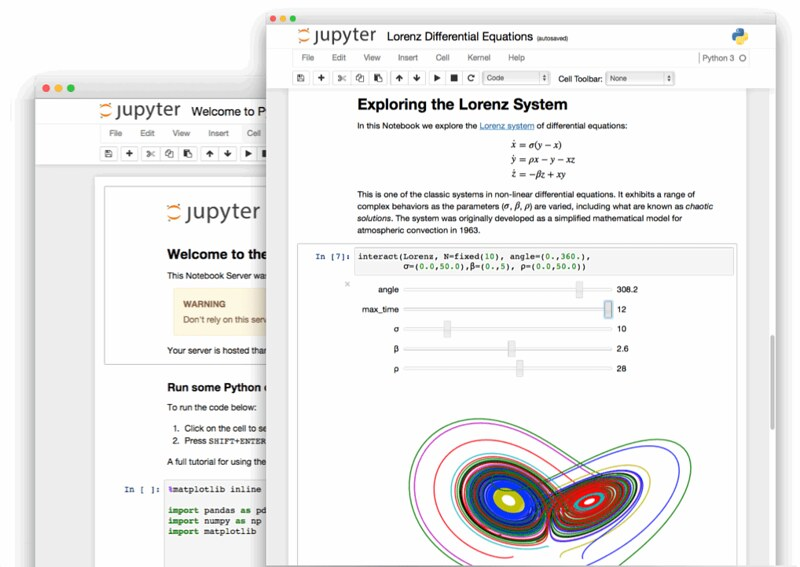

Research software guides
Contents
Research software guides¶
About this guide¶
This guide aims to give you a quick overview of research software concepts and best practices. After reading these materials you will be able to produce FAIR enough software in the context of your research.
Bare in mind that even though data analysis involves scripting, and writing code, in the “Research data guides” we focus on the processes of working with data, while in these guides our focus will be on the quality of the scripts you right. Once you code regularly and in different projects, you will feel the need of managing your software as much as your data. Things like reusability, reproducibility and readability will become increasinly important to save you and others time.

What is research software¶
Research software engineering is the use of software engineering practices in research applications. The term was proposed in a research paper in 2010 in response to an empirical survey on tools used for software development in research projects. It started to be used in United Kingdom in 2012, when it was needed to define the type of software development needed in research. This focuses on reproducibility, reusability, and accuracy of data analysis and applications created for research. Read more….
“Software that is used to generate, process or analyse results that you intend to appear in a publication Read more…
Think of it as software applied in research, in contrast to research applied in industrial or business applications.
What is not research software in our view¶
Research Software is not just software that uses data.
Research Software is not just Data Science, even though it is heavily influenced by this field.
The main focus of research software is not to produce innovative products, platforms or services. It is focused on prodicing reproducible software to advance research.
Therefore research software is not software development for services, businesses or companies.
Note
It might be the case that tools developed in the context of research evolve towards useful packages that require maintanance and support, but this emerges from consolidated and mature scientific communities, in an open source manner.
Examples of research software outputs¶
Research software projects can be simple or more complex:
A simple script or set of scripts where you show how an analysis is done.
A simple jupyter-notebook or series of jupyter notebooks where you deliver text, plots and code-snippets related to a research task or result.
Packages that you use in your research (Numpy, Pandas or your own custom package )
Research infrastructure, tools and stacks(spyder, jupyter hub, jupyter notebooks, jupyter lab, docker, python, etc.)
Why should you care about research software?¶
Scientific software packages and tools allow researchers to make use of computing and data to ask new research questions and approach research from a computational standpoint.
The emergence of open source tools and the adoption of software best practices in all science domains have changed the way in which researchers collaborate and produce science.
Research software empowers researchers with tools, practices and culture.
Adopting best practices in your own research software projects enable you to be more productive, effective, get feedback fasterm, collaborate with others and refine your workflows with automation.
Who does research software?¶
Essentially researchers and/or RSEs, Data managers.
The RSE role¶
Note
The role of Research Software Engineers (RSEs) emerged within research groups where some members were doing mostly software development for the research group. In this context the need for more advanced support and setup of research infrastructure, adoption of best practices or dedicated development work is taken care by researchers that adopted a software development culture. Therefore a research software engineer has not only a technical background, but also a scientific and research culture. Bare in mind that there are also many researchers that have a software engineering and can also be doing intensive research software engineering. Another case could be that someone with a computer science background joins a research group and embeds into a knowledge domain for a period of time and contributes with this background to the research groups.